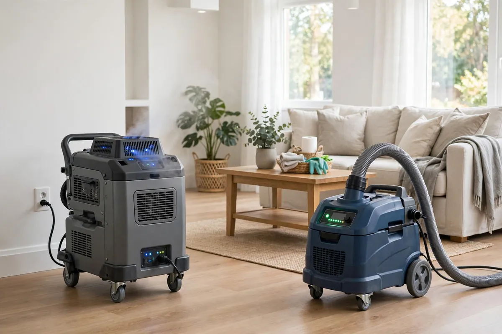

Odor Removal After Water Damage in Hollywood, FL
A musty smell that won't leave is your nose reporting what your eyes missed: something is still wet, still growing, or still contaminated. Odor removal starts by treating the smell as a symptom, not the problem — tracking it to trapped moisture, hidden microbial growth, or residues left by the water event — and only then neutralizing it. Spraying fragrance over a damp wall cavity just schedules the smell's return.

Understanding Odor Removal After Water Damage in Hollywood
Persistent odors after water damage have a short list of usual suspects. Damp drywall and insulation off-gas as they sit wet. Carpet pad acts like a sponge for both water and whatever it carried. HVAC systems pick up musty air from a damp coil or drain pan and distribute it through every room. And in contamination events, organic residues left behind continue to smell until they're physically removed — no amount of air freshener changes that chemistry.
The critical sequencing is dry first, deodorize second. Deodorization treatments — thermal fogging, hydroxyl machines, specialized sealers — work on odors at the molecular level, but only after the source is eliminated. Applied over still-wet materials, they're wasted effort. That's why odor jobs always begin with moisture mapping: find what's wet, dry or remove it, verify with meters, and then treat whatever smell remains.
How We Handle the Job
We start by locating the odor's origin with moisture readings and a careful sniff-test of suspect areas — wall bases, under flooring transitions, inside HVAC closets. Wet materials get dried or, where they're unsalvageable like saturated pad or insulation, removed. Hard surfaces are cleaned, and the HVAC path is checked since ducts and coils can harbor the same moisture driving the smell. Only once everything verifies dry do we apply deodorization treatment matched to the odor type, then confirm the result with you present.
You'll know exactly what caused the smell and what was done about it — we don't treat and hope. If the odor traces to a larger loss, related work such as emergency water extraction, structural drying, or flood cleanup may be part of the same job, with deodorizing as the final step, never the first.
Local Response and Insurance Support
Searching for odor removal after water damage near me usually means you need help without delay. We answer emergency calls around the clock. Documentation — photos and moisture readings — supports conversations with your insurance carrier when the loss is sudden and accidental. We do not decide coverage; we provide clear technical information about the work performed.
When to Call
Call if you have active water, wet materials that are not drying, odors after a leak, or a backup that may involve contaminated water. Early action in Hollywood’s climate is almost always less disruptive than waiting. For neighborhood-specific service, see our service areas. For the full list of capabilities, visit all services.
Frequently Asked Questions
The room looks dry — why does it still smell musty?
Because something you can't see is still damp: a wall cavity, carpet pad, insulation, or the HVAC system. Odor is often the first evidence of hidden moisture, which is why we map with meters before treating anything.
Will air fresheners or candles take care of it?
They mask the smell for hours while the source keeps producing it. Real odor removal means finding the wet or contaminated material, drying or removing it, and then neutralizing what's left.
Can the smell be coming through my air conditioner?
Yes — it's common. A damp evaporator coil, a slimy drain pan, or ducts that picked up musty air will broadcast the odor to every room. The system gets inspected as part of tracking the source.
How long until the smell is completely gone?
Once the source material is dry or removed and treated, odors fade quickly. We verify dryness with meters before deodorizing so the treatment isn't fighting an active moisture problem.